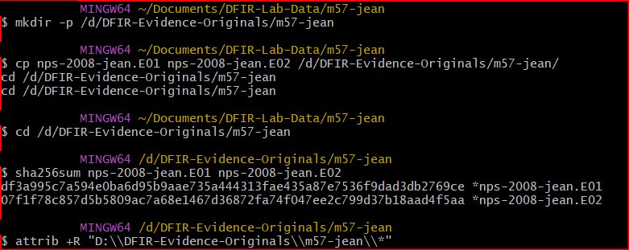
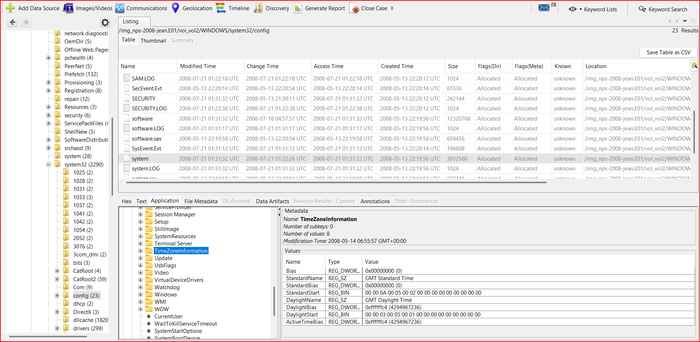
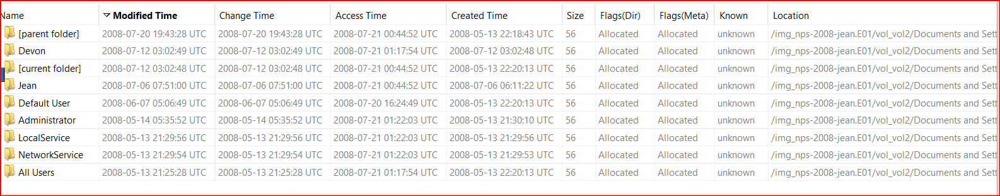
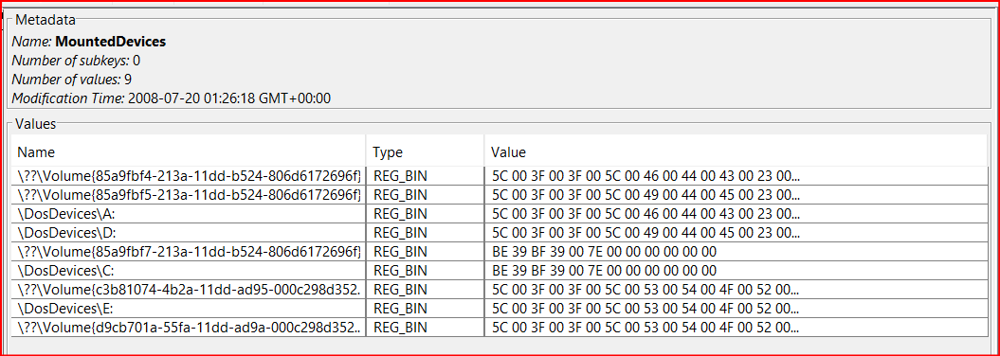

Turnabout Forensics · Case 2
Turnabout Spreadsheet
When I first read the case scenario, I couldn't stop wondering: was Jean a Dahlia Hawthorne, all sweet smiles hiding something? Or was she innocent? There was only one way to find out. As Miles Edgeworth would say, in court, evidence is everything. So with no time to lose, I opened the case.
The case comes from the M57-Jean scenario on Digital Corpora. I hashed the evidence first, for two reasons. One, to confirm I was starting on a clean, untouched copy. Two, so that when I finished, I could prove I hadn't changed a thing. I kept a read-only original on my D: drive and only ever worked from a copy on C:.

Court Record Cleanup, Again
First, my Court Record needed updating again. This time it was Autopsy. My old 4.14 version kept crashing on launch with this:
libtsk_jni ... Can't find dependent librariesSo I removed it completely and installed the newer 4.22.1. Every obstacle teaches me two things: patience, and something new. With the new version running, I loaded the image into Autopsy and started investigating.
Objection! The Laptop That Wasn't
The case called it a laptop. But a little bit of sleuthing, and something didn't add up. Objection! VMware Tools went in just 7 minutes after Windows, the CD drive was a VMware one, and the network card's address started with VMware's prefix. This "laptop" was actually a virtual machine. It piqued my interest, and I wanted to dig deeper to see what else I could find.
Calling Wendy Oldbag to the Stand
Next, I needed the user's time zone. Without it, I couldn't put the events in the right order, and in a case like this, the order is everything. So I called in our good old witness, Wendy Oldbag - the registry. Just like her, it remembers everything, and you only have to ask the right question.

While I was working out the time zone, I noticed something odd: in some places, Autopsy was showing times 4 hours off from what the registry said. I saw it in Last Login, Shell Bags, Installed Programs and the Excel metadata. I'm not sure yet if it's this version of Autopsy (4.22.1) or something else. More cases will tell. Anyone else run into this during their investigations?
Rookie tip: don't trust every timestamp on the screen. Check it against the source.
Hold It! The Spreadsheet
I started with the users. Six accounts were created within about 3 minutes, but only three of them ever logged in. One user had four logins but only one real session. That one went straight into my Court Record as a Psyche-Lock. More on that later.

Digging into the users brought up the spreadsheet in question. It was in two different places, with the same hash. Same file, two locations. Hold it! How did it get to the second one?
I went through the link files, the prefetch files and every other artifact I could think of. Then I found it: an email address that didn't belong. And right next to it, an email thread between Jean and her boss Alison where the two of them clearly weren't talking about the same thing.
Psyche-Lock: Where Did It Come From?
Jean's profile didn't exist on this laptop until 07-06, but the spreadsheet was older than that. So it came from somewhere outside this laptop. Excel didn't show up in UserAssist that night either, which means Jean didn't start it from the Start menu. Another program opened it, and I have a pretty good idea which one.
Then there was a USB drive that showed up around the same time. Autopsy cut off the value I needed, so I decoded MountedDevices myself to confirm it was drive E:. It turned out to have nothing to do with the file, but I still wanted to be sure. Leave no stone unturned! Nothing else on the laptop ever mentions E:.

And because Office's file window doesn't save the folder you browse to, one question is still locked: where exactly was the file attached from at 01:27:27?
Verdict
After the leak, an email from Jean's colleague Bob showed up. Our classic Larry Butz, totally confused about what was happening! I wanted to know two things: did anyone else email about the file, and did Jean ever visit the website where it ended up? I found no evidence of Jean visiting that website, no attempt to hide what she did, and no other user doing anything about it.
So my verdict: NOT GUILTY! Jean wasn't a Dahlia after all. She was the victim of a spear-phishing attack.
These cases are famous, so beginners probably already know how it ends. But in court, knowing it or assuming it doesn't cut it. You have to prove it.
The Locks Still Standing
Cybersecurity and Ace Attorney fans, anyone up for a challenge? Here are a few minor Psyche-Locks I haven't broken yet. Want to give them a try?
🔒 01:27:27: where exactly was the spreadsheet attached from?
🔒 Devon's four logins: four logins, but only one profile session. Security auditing was off, so the logs won't help. What else could?
🔒 The machine name: why did Alison's real emails come from a machine named jean13fbf038a3? My guess is it's just how the scenario was built, but I can't prove it.
🔒 01:28: Outlook only keeps sent times to the minute, so "01:28" means some time in that minute. Can anyone pin down the second?
If you break one, tag me on LinkedIn and show me how!
Jean's name is cleared. Now, where's my next cup of coffee?